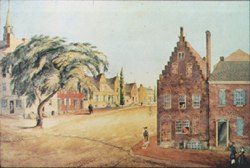

|
by
 The intersection of State and Pearl Streets was one of early Albany's principal crossroads. During the seventeenth century, it was a Van Rensselaer family property that devolved to Alida Schuyler Van Rensselaer Livingston. A well-known landmark in historical circles, it has been the subject of much traditional lore. The name commemorates a legendary elm tree that reputedly was planted in 1735 by a young Philip Livingston in front of his father's house on the northwestern corner. In 1756, the building still belonged to the Livingston family and was used as a headquarters by the British army. In the days before Dutch Elm Disease all but obliterated the species, that tree grew to be an Albany landmark. By the 1780s, the northwest side was known as "Webster's Corner" as the yellow frame building was then the printery and newspaper office of Charles R. and George Webster. The old-style structure on the northeastern corner was the landmark Lydius House - at that time the residence of the reclusive Baltus Lydius. North, along the western side of Pearl Street, was the double townhouse called "Vanderheyden Palace." This picture (probably created from the vantage point of the old Schuyler house) shows the intersection and those landmarks in 1815 when the elm tree would have been about 90 years old. Over the years, the location was the site of a number of stores and other establishments. Prior to the Revolution, it housed the bookstore of Stuart Wilson; the "Blue Belle Tavern," last run by Job Stafford; and, after 1837, a piano factory.
Subsequent engravings and photographs documented the growth of the tree and evolution of this pivotal location. The old elm tree was removed on June 15, 1877. The choice corner location later was a bookstore (razed 1859), Tweedle Hall, then a skyscraper called the Ten Eyck Hotel (razed in 1971). Today, the corner is occupied by a bank building - where the tablet shown here is incorporated in its wall. This watercolor by James Eights
depicts the landmark as he remembered it as a teenager. Perhaps he
was one of those who remember old Mr. Lydius as "the
terror of young boys!" From a print in the collection of the New
York State Museum.
Photograph adapted from Paula Lemire's engaging serial exposition entitled Albany Daily Photo.
Follow this link to more graphical representations of the Elm Tree Corner. first posted 5/25/01; last revised 11/8/11 |